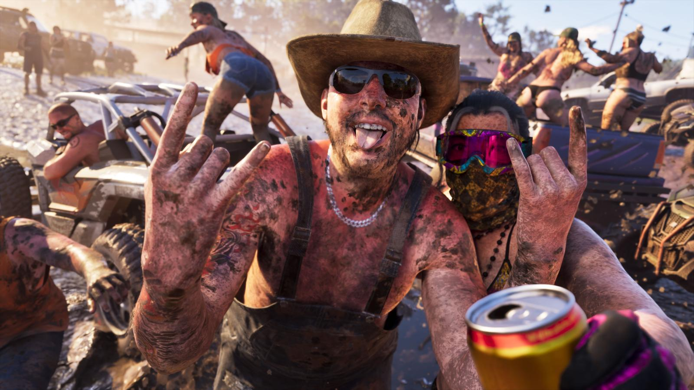
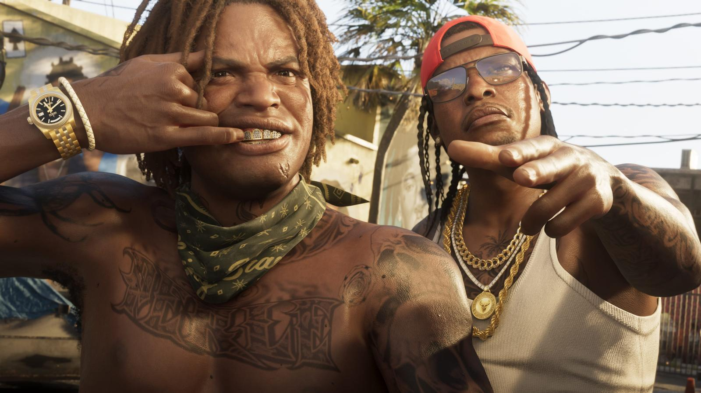

Коллекционка GTA 6 за $400 без игры: что говорят игроки
Обновлено:

- Набор «The Goodtime State» стоит $399,99 — игры внутри нет.
- Главная претензия: «это не коллекционное издание, а коробка мерча».
- Защитники: очки Oakley и кепка New Era — настоящие бренды, а сам набор — сувенир из вымышленного мира.
- Перекупщики просят $800–1500 — пока безуспешно.
С чего начался спор
24 сентября Rockstar открыла предзаказ набора «Grand Theft Auto VI: The Goodtime State — Vice City Collection». Через несколько минут под постами уже шла война. Самый популярный комментарий на Reddit состоял из трёх слов — «This is $400?» («Это стоит $400?») — и собрал больше 1300 ответов.
Причина простая: за $399,99 покупатель получает фигурку аллигатора, очки, кепку, сумку и россыпь мелочей. Самой игры в коробке нет. Что внутри — подробно в Слух: у GTA 6 будет коллекционное издание.
Аргументы «против»
«Дёшево и безвкусно».
один из самых заплюсованных комментариев на Reddit
«Это даже не коллекционное издание — в нём нет игры. Это просто набор мерча».
пользователь Reddit u/Sektsioon
- Коллекционное издание без игры — это уже не издание, а сувенирный магазин.
- Центральный предмет — пластиковый аллигатор. Для многих это странный выбор для «главной игры десятилетия».
- Самые дорогие вещи набора можно купить отдельно и дешевле.
- Сразу после спора о цене игры в $80 (мы писали о нём: Цена GTA 6 $80: что говорят игроки) — ещё одна «дорогая» новость.

Аргументы «за»
- Oakley Frogskins и New Era 9FORTY — вещи настоящих брендов, а не безымянный мерч.
- Набор никто не заставляет покупать: игра продаётся отдельно, коробка — для коллекционеров.
- Rockstar продаёт не «вещи с логотипом», а кусочек мира — сувениры из Леониды, будто ты там побывал.
Последний аргумент лучше всех сформулировал дизайнерский журнал Creative Bloq: набор работает как сувенирная лавка несуществующего места. Rockstar десятилетиями наполняла свои миры выдуманными брендами, рекламой и фирмами — и теперь вынесла эту игру в реальность. Аллигатор Макка — не случайная игрушка, а персонаж вселенной, о котором студия пока ничего не рассказывает. И эта недосказанность — часть маркетинга.
Считаем деньги
Критики на Reddit разобрали коробку по ценникам. Очки Oakley Frogskins в рознице стоят около $139, кепка New Era — меньше $30. Вместе — около $170. Значит, остальные ~$230 — это цена фигурки, сумки, зеркальца, значков, наклеек и постера с логотипами GTA.
| Набор | Год | Цена | Игра внутри |
|---|---|---|---|
| GTA V Collector’s Edition | 2013 | $149,99 | ✅ есть |
| Red Dead Redemption 2 Collector’s Box | 2018 | $99,99 | ❌ нет |
| GTA VI: The Goodtime State | 2026 | $399,99 | ❌ нет |
Rockstar уже продавала «коллекционку без игры» — к Red Dead Redemption 2. Тогда студия объясняла это просто: набор — отдельный компаньон, который можно взять к любой версии игры. Разница в том, что в 2018-м это стоило $99,99, а сейчас — вчетверо больше.
Перекупщики
Набор ещё свободно продаётся на сайте Rockstar, а на eBay его уже выставляют за $800–1500. Некоторые «щедрые» продавцы — за $600. Игроки в ответ иронизируют:
«Если кто-то это купит — перекупщики заслужили эти деньги».
комментарий, который приводит GamesRadar+
«Я, пожалуй, просто возьму игру. $100 и так хватает».
комментарий, который приводит GamesRadar+
Настроение
Судя по самым популярным комментариям, критика перевешивает: большинство игроков считает, что за $400 в «коллекционке» должна лежать игра. Но и спорить особенно не с чем — набор никто не навязывает, а запасы, по крайней мере пока, не заканчиваются.
Для России вопрос вообще теоретический: в список регионов доставки она не входит. А как купить саму игру — Как купить GTA 6 в России.
А вы бы взяли аллигатора за $400 — или сэкономили бы на Ultimate Edition? Обсуждение продолжим в следующем выпуске «Что говорят игроки».
Источники: Notebookcheck (цитаты с Reddit); GamesRadar+ (перекупщики); Wccftech (сравнение с RDR2 и GTA V); Creative Bloq; Push Square.